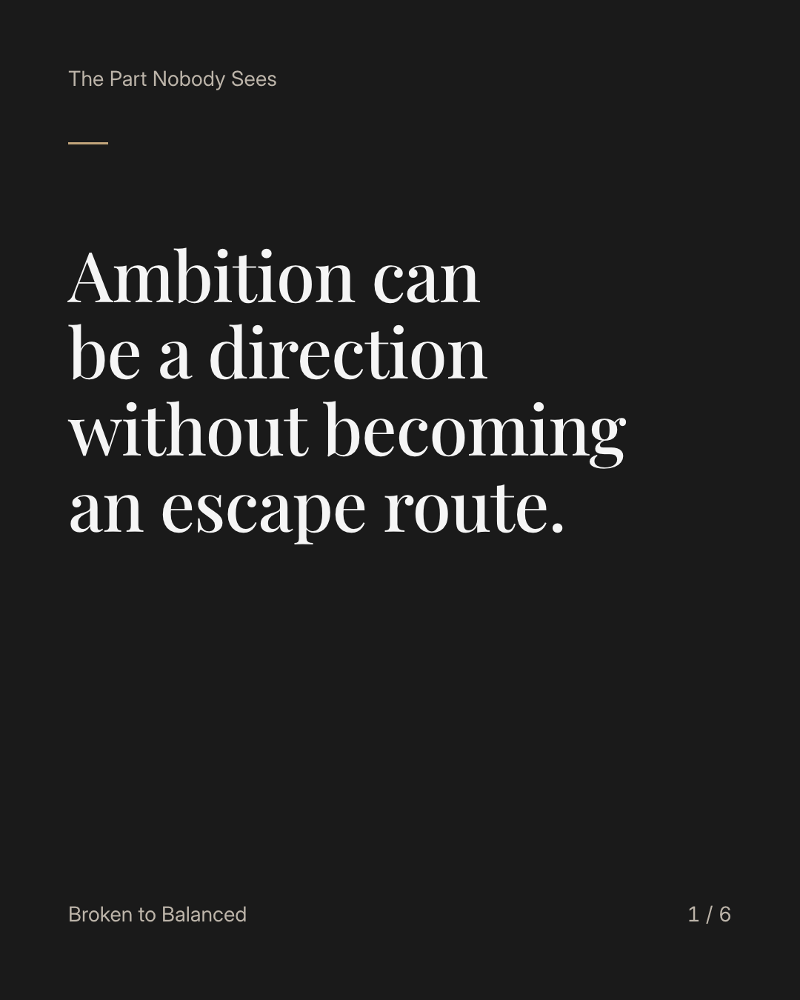
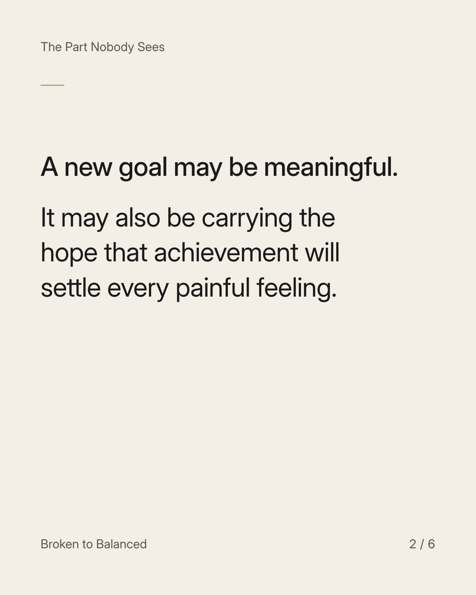
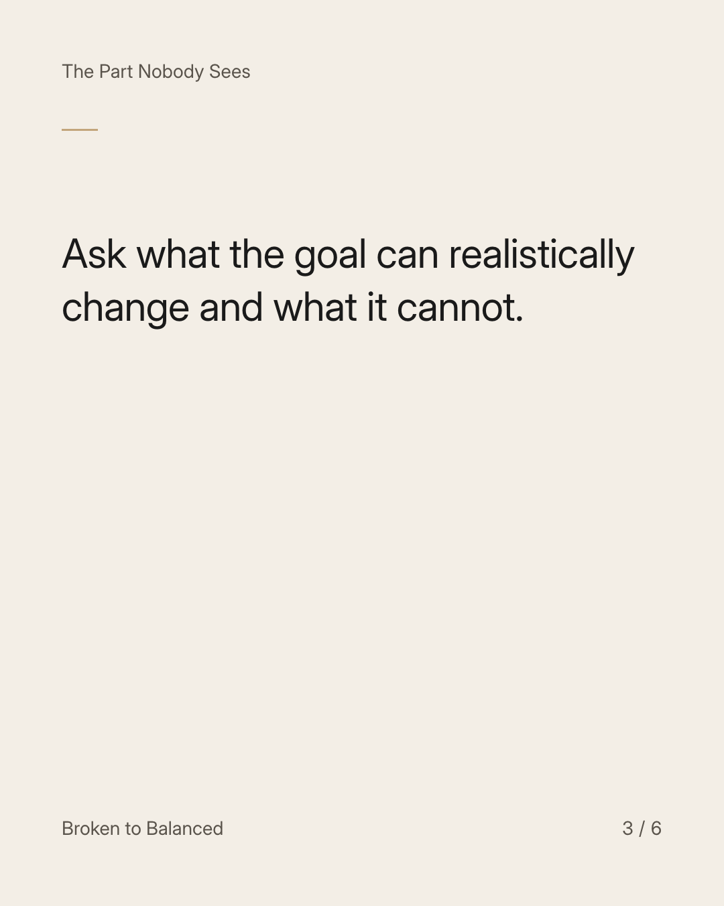
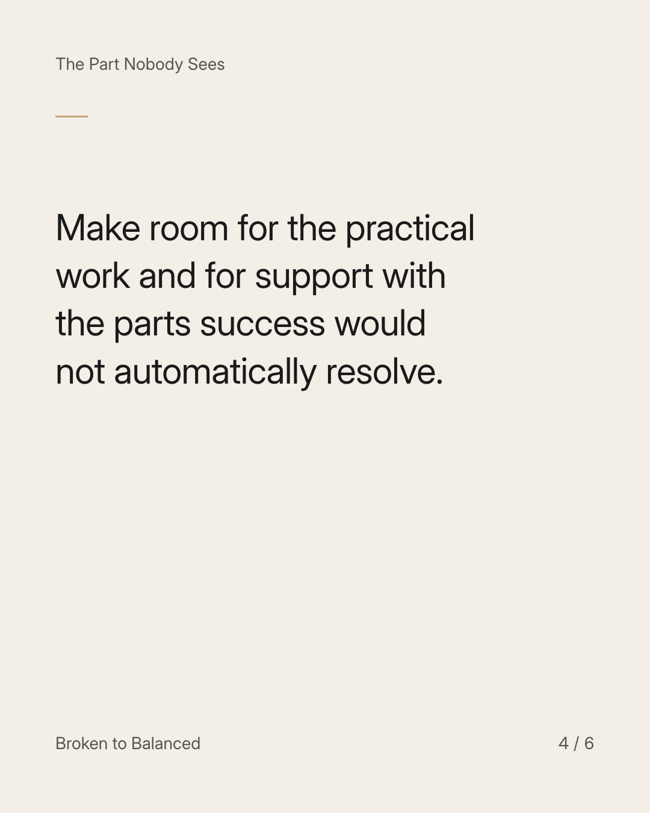
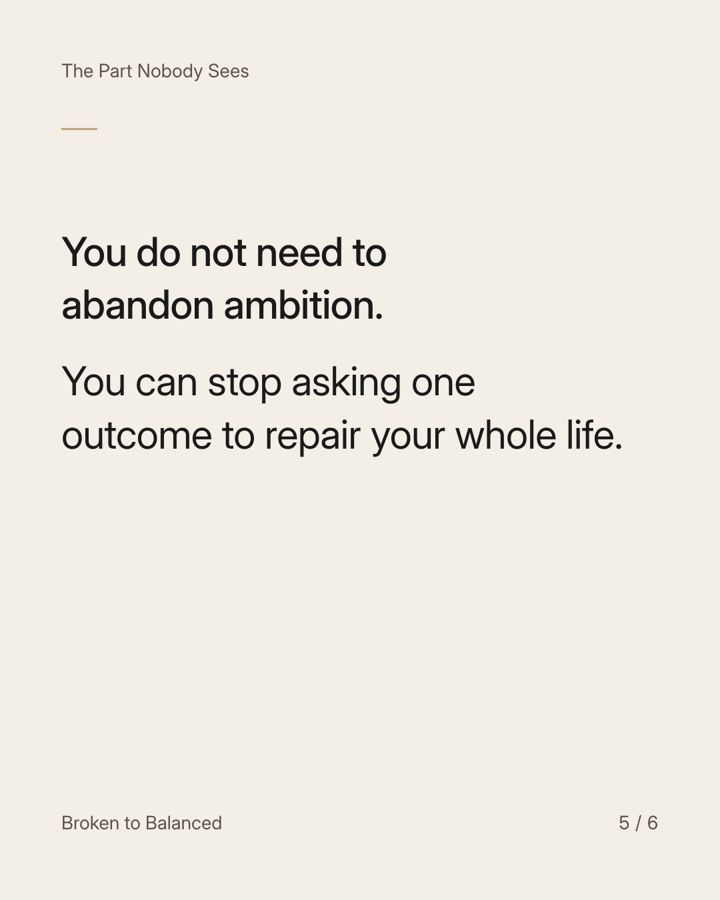
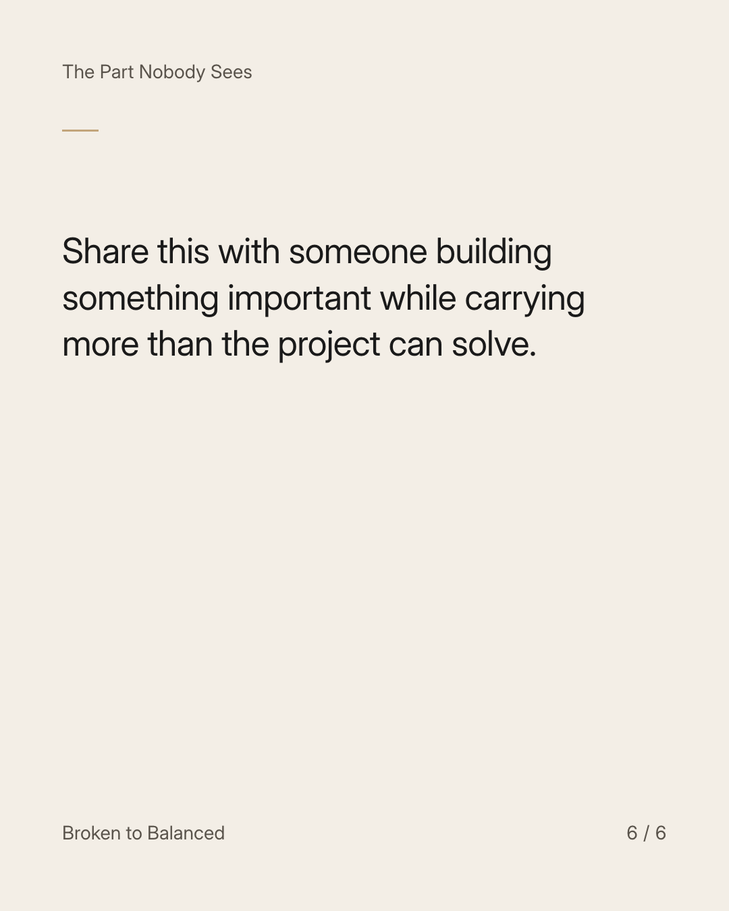

Exact text and accessibility text
Ambition can be a direction without becoming an escape route.
Slide 1 of 6. Ambition can be a direction without becoming an escape route.


Exact text and accessibility text
A new goal may be meaningful. It may also be carrying the hope that achievement will settle every painful feeling.
Slide 2 of 6. A new goal may be meaningful. It may also be carrying the hope that achievement will settle every painful feeling.


Exact text and accessibility text
Ask what the goal can realistically change and what it cannot.
Slide 3 of 6. Ask what the goal can realistically change and what it cannot.


Exact text and accessibility text
Make room for the practical work and for support with the parts success would not automatically resolve.
Slide 4 of 6. Make room for the practical work and for support with the parts success would not automatically resolve.


Exact text and accessibility text
You do not need to abandon ambition. You can stop asking one outcome to repair your whole life.
Slide 5 of 6. You do not need to abandon ambition. You can stop asking one outcome to repair your whole life.


Exact text and accessibility text
Share this with someone building something important while carrying more than the project can solve.
Slide 6 of 6. Share this with someone building something important while carrying more than the project can solve.
Exact caption
Plain-text fallback: select and copy the caption.